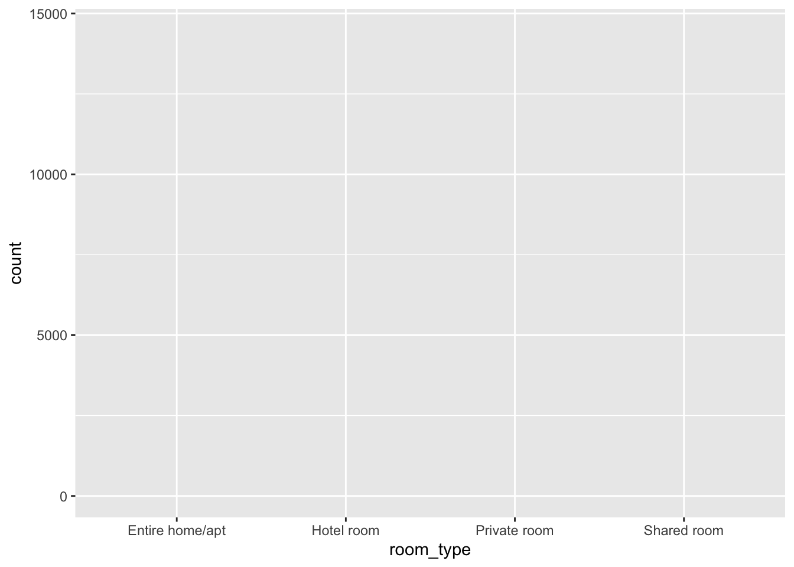
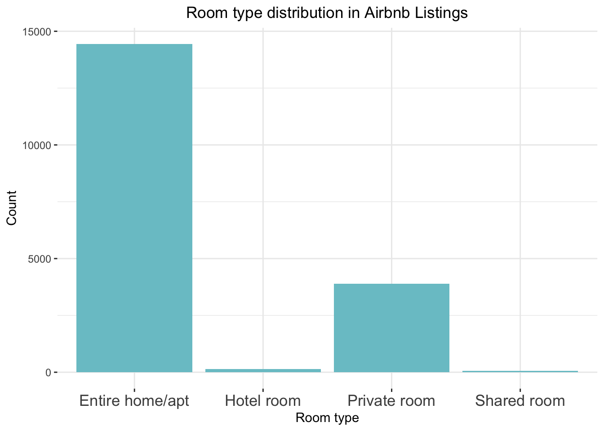

Session02 Installing R packages, I/O + a deep dive into the data.frame class
Goran S. Milovanovic, PhD

Session 02: Installing R packages, I/O + a deep dive into the data.frame class
What do we want to do today?
Data Science is, well, all about data. But data lives somewhere.
Where? How do we find them? In this session we will learn about the
basic I/O (Input/Output) operations in R: how to load the disk stored
data written in various formats in R, and how to store them back. We
will learn that sometimes it makes no difference if the dataset lives on
the Internet or on our local hard drives. We will learn to perform the
basic I/O operations in base R before we start meeting the friendly tidyverse packages - readr, for example - that
provide improved and somewhat more comfortable to work with procedures.
We will learn more about the data.frame in R: what is
subsetting and is it done, how to summarize a dataset represented by a
data.frame in R, how to bind dataframes together. We
continue to play with lists too and start learning about simple
operations on strings in base R.
0. Prerequisits.
- Create a directory named
_datain the directory where you want to store your R code for this session. - Go to the Inside
Airbnb page and download the
listings.csvcsvfile (under the Amsterdam, North Holland, The Netherlands section). Let’s learn something right now:.csvis short for comma separated values and represents one the most frequently observed file formats used in practice. The entries in this file are separated by commas: hence the name. Thecsvformat has many close relatives, of whichtsv- tab separated values - is probably the most famous one. - Open the
listings.csvfile in Microsoft Excel or Libre Calc and save it using the same filename but as an.xlsxfile in your_datadirectory.
1. Read data + inspect a data frame + store data
Again, everything happens in a directory somewhere. You really need to keep the organization of your directories neat!
Remember, when we work in R, there is always something called a working directory. I know you have opened and R session in RStudio: ask yourself “Where am I?”:
getwd()## [1] "/Users/goransm/Work/___DataKolektiv/__freeDataKolektiv/_devsify"list.files(getwd())## [1] "_data" "_devsify.Rproj"
## [3] "_site" "_site.yml"
## [5] "01_think_together_dkserver.png" "02_explore_possibilities_dkserver.png"
## [7] "03_training_dkserver.png" "04_wikidata_dkserver.png"
## [9] "about.html" "about.Rmd"
## [11] "academic.png" "AdvAnalyticsR2024_Banner.jpeg"
## [13] "aleksandar_cvetkovic_introMLpython.jpg" "aleksandar_cvetkovic_introMLpython.png"
## [15] "AleksandarNarancic175.png" "AleksandarPanovski175.png"
## [17] "analysttraining.png" "businesstraining.png"
## [19] "DataScienceSessions.jpg" "devsify_DK_logo.png"
## [21] "devsify_GSM500px__Banner.png" "DK_Logo_100.png"
## [23] "DK_Logo_400.png" "DK_logo_horizontal.png"
## [25] "DK_Logo_White_150.png" "DK_Logo_White_NoTitle_25.png"
## [27] "dkmlconfpalic2023.png" "dkserver_consulting.jpg"
## [29] "dkserver_courses_CustomRTraining.jpg" "dkserver_courses_DSSV1.jpg"
## [31] "dkserver_courses_IntroDataManagement.jpg" "dkserver_courses.jpg"
## [33] "dkserver_wikidata.jpg" "DSCEurope2021.png"
## [35] "dscEurope2022_BDTTechTutorial.png" "DSCEurope2022_panel.png"
## [37] "dsceurope2023.png" "dss_vol05_python2023_500px.png"
## [39] "DSS_Vol06_Py_Banner_OPENED_02.png" "dss03python2023_banner500px.png"
## [41] "dss04python2023_banner500px.png" "DSS05_2023_srb.png"
## [43] "dsss2022_courses.jpg" "dsss2022_header.jpg"
## [45] "dssvol06_py_banner.jpeg" "eRum2018.png"
## [47] "eRum2020.png" "favicon.png"
## [49] "filipinterviewInstitutZaFiziku.jpg" "footer.html"
## [51] "foundationaltraining.png" "freeDK_Expectations.png"
## [53] "freeDK_Organization.png" "freeDK_Program.png"
## [55] "freeDK_Rules.png" "freeDK_TechStack.png"
## [57] "Full_GPT_architecture.png" "github.png"
## [59] "goran_milovanovic_introMLpython.jpg" "goran_milovanovic_introMLpython.png"
## [61] "GSM_Krakow2024_invert.jpg" "GSM_Krakow2024.jpg"
## [63] "gsm_round_175px.png" "Hallucination_CronenbergStereo.png"
## [65] "header.html" "HeikeThomys175px.jpg"
## [67] "HipkonLajt2020.png" "igf_identifying_the_impact.png"
## [69] "IlijaLazarevic175px.jpg" "index.html"
## [71] "index.Rmd" "InspiraHub2023Meetup.png"
## [73] "instagram.png" "IntroMLPython_Head_eng.png"
## [75] "IntroMLPython_Head.png" "JelisavetaMilovanovic175px.jpeg"
## [77] "l01_lists.html" "l01_lists.Rmd"
## [79] "linkedin.png" "Logo-2C-21px-TM.png"
## [81] "machinery.png" "media.html"
## [83] "media.Rmd" "MilanoR2019.png"
## [85] "MilicaDjurkovic175px.jpg" "MilovanMinic175px.jpeg"
## [87] "MilovanovicVreme.jpg" "MLSS03_ConvexFunctions.png"
## [89] "MLSS03_NeuralNetwork.png" "MLSS03_WebPage_Notebook_Banner.png"
## [91] "MLSS03_WebPageBanner.png" "n00_installations.html"
## [93] "n00_installations.Rmd" "n00_intro_session.html"
## [95] "n00_intro_session.html.R" "n00_intro_session.R"
## [97] "n00_intro_session.txt.R" "n01_intro_session.R"
## [99] "n01_introR_session.R" "n03_functional.html"
## [101] "n03_functional.Rmd" "n04_more_functional.html"
## [103] "n04_more_functional.Rmd" "NedaRadibratovic175px.jpg"
## [105] "Netokracija2023.png" "NetokracijaIntervju2023.png"
## [107] "PE_banner_2024.png" "PE_GeneralBanner.png"
## [109] "PE_GeneralBanner02_web.png" "PE_GeneralBanner02.png"
## [111] "PE_GeneralBannerDecember2023.png" "PE_sep2023.png"
## [113] "prerequisites.html" "prerequisites.nb.html"
## [115] "prerequisites.Rmd" "RadmilaVelickovic175px.png"
## [117] "RadovanSimikic175px.jpg" "regression_mle.png"
## [119] "renv" "renv.lock"
## [121] "resources.html" "resources.Rmd"
## [123] "Rlogo.png" "s00_installations.html"
## [125] "s00_installations.Rmd" "S01_01_Functions.jpeg"
## [127] "S01_02_Arrays_and_Lists.jpeg" "s01_introduction_to_r_files"
## [129] "s01_introduction_to_r.html" "s01_introduction_to_r.nb.html"
## [131] "s01_introduction_to_r.Rmd" "S02_01_DataFrames.jpeg"
## [133] "s02_dataframe.Rmd" "S03_01_FunctionalProgramming.jpeg"
## [135] "s03_functional.Rmd" "S04_01_RProgramming.jpeg"
## [137] "s04_more_functional.Rmd" "s05_EDA.Rmd"
## [139] "s06_Probability.Rmd" "S07_01_ProbabilityFunctions.jpeg"
## [141] "S17_01_ROC.jpeg" "S17_02_LikelihoodFunction.jpeg"
## [143] "S21_01_RandomForest.jpeg" "S22_01_Bias-Variance_Tradeoff.jpeg"
## [145] "session00_logos.png" "site_libs"
## [147] "sitelinks1.jpg" "sitelinks2.jpg"
## [149] "sitelinks3.jpg" "sitelinks4.jpg"
## [151] "skc_kahneman_delfi_2015.jpg" "startit_add_dsss2022_800.jpeg"
## [153] "StartitMeetup2016_InfRetreival.png" "StartitMeetup2016.png"
## [155] "talasAI.png" "twitter.png"
## [157] "undp_machinery2023.jpg" "UvodR_startit_banner.jpg"
## [159] "video.Rmd" "VladimirMijatovic175px.jpg"
## [161] "wd_thinkpad_official.png" "webit2023.jpeg"
## [163] "WikidataCon2019.png" "WikidataCon2021.png"
## [165] "wikimediablog2018.jpg"Ok, so I do have a _data directory in my working
directory. Let’s pronounce the _data directory in R:
rootDir <- getwd()
dataDir <- paste0(rootDir, '/_data/')
analyticsDir <- paste0(rootDir, "/_analytics/")
list.files(dataDir)## [1] "_listings" "listings_selection.csv" "listings.csv"
## [4] "listings.xlsx"^^ And here is the listings.csv file. It represents the
Airbnb summary information and metrics for listings in Amsterdam. We
will use it to practice our data frame skills in R.
We want to read listings.csv to R and make it a
data.frame. This is how we do it:
filename <- paste0(dataDir, "listings.csv")
listings <- read.csv(file = filename,
header = TRUE,
check.names = FALSE,
stringsAsFactors = FALSE)What has just happened:
read.csvis an R function to readcsvfiles from disk (or Internet, as we will see later) into the RAM memory of your machine which is put to R’s availability;- the
fileargument is the complete path to the file in your local filesystem; - the
headerargument tells R that the first row of the file contains column names; - the
check.namesargument, set toFALSEin this example, tells R not to check whether the column names are syntacticaly valid R column names for a data frame; - the
stringsAsFactorsargument, set toFALSE, is a bit annoying: theread.csv()default value for this argument isTRUEand using it that way would turn any character valued columns into a data type known asfactorin R, and more often than not that is not what you want to do; never forget to setstringsASFactors = Finread.csv()if you are not sure that you want all chacter valued columns automatically converted into factors.
You can now inspect listings in RStudio from the
Environment panel. We will take a look at the structure
of this data frame now: head(someDataFrame, how many rows)
shows us the top how many rows from the
someDataFrame data frame; tail() looks at the
provided number of rows found at the bottom of the data frame:
top_listings <- head(listings, 20)
head(listings, 10)## id name host_id host_name neighbourhood_group
## 1 2818 Quiet Garden View Room & Super Fast WiFi 3159 Daniel NA
## 2 20168 Studio with private bathroom in the centre 1 59484 Alexander NA
## 3 25428 Lovely apt in City Centre (w.lift) near Jordaan 56142 Joan NA
## 4 27886 Romantic, stylish B&B houseboat in canal district 97647 Flip NA
## 5 28871 Comfortable double room 124245 Edwin NA
## 6 29051 Comfortable single room 124245 Edwin NA
## 7 31080 2-story apartment + rooftop terrace 133488 Nienke NA
## 8 41125 Amsterdam Center Entire Apartment 178515 Fatih NA
## 9 43109 Oasis in the middle of Amsterdam 188098 Aukje NA
## 10 43980 View into park / museum district (long/short stay) 65041 Ym NA
## neighbourhood latitude longitude room_type price minimum_nights
## 1 Oostelijk Havengebied - Indische Buurt 52.36575 4.94142 Private room 59 3
## 2 Centrum-Oost 52.36509 4.89354 Private room 236 1
## 3 Centrum-West 52.37297 4.88339 Entire home/apt 125 14
## 4 Centrum-West 52.38761 4.89188 Private room 135 2
## 5 Centrum-Oost 52.36610 4.88953 Private room 75 2
## 6 Centrum-Oost 52.36607 4.89100 Private room 55 2
## 7 Zuid 52.35132 4.84838 Entire home/apt 219 3
## 8 Centrum-West 52.37891 4.88321 Entire home/apt 160 4
## 9 Centrum-West 52.37537 4.88932 Entire home/apt 211 3
## 10 Zuid 52.35746 4.86124 Entire home/apt 67 30
## number_of_reviews last_review reviews_per_month calculated_host_listings_count availability_365
## 1 278 2020-02-14 1.95 1 123
## 2 339 2020-04-09 2.58 2 3
## 3 5 2020-02-09 0.14 1 33
## 4 219 2020-07-25 2.01 1 219
## 5 336 2020-09-20 2.68 2 346
## 6 481 2020-08-28 4.05 2 360
## 7 32 2017-10-16 0.28 1 0
## 8 89 2020-02-10 0.73 1 0
## 9 60 2020-03-07 4.31 1 0
## 10 61 2018-02-18 0.50 2 184tail(listings, 10)## id name host_id host_name
## 18513 46910585 luxurious 2bdr apartment 378943951 Martin
## 18514 46911127 FELICE house 373125933 Dario
## 18515 46912324 studio In Amsterdam shared bathroom 375398295 Danila
## 18516 46913926 Room for 2 facing private patio - Amsterdam centre 104495359 Sebastian
## 18517 46937483 ♛♝♕ WOW 3 BD APT - Oosterpark Amsterdam ♛♝♕ 379277730 Jean
## 18518 46938808 NiceAmsterdam 379294518 Elizabeth
## 18519 46940774 Fantastic Apartment with beautiful views 279181956 Ramon
## 18520 46944602 cozy apartment in amsterdam 375398295 Danila
## 18521 46953753 Great luxurious apartment in city centre 379498141 Lisa
## 18522 46960026 Classic houseboat in Amsterdam city centre 213284349 Jochum
## neighbourhood_group neighbourhood latitude longitude room_type
## 18513 NA Centrum-Oost 52.37867 4.90730 Entire home/apt
## 18514 NA Centrum-West 52.37706 4.89396 Entire home/apt
## 18515 NA De Pijp - Rivierenbuurt 52.34381 4.90639 Entire home/apt
## 18516 NA Centrum-West 52.37495 4.89378 Private room
## 18517 NA Oud-Oost 52.35830 4.92186 Entire home/apt
## 18518 NA Centrum-Oost 52.36978 4.91443 Entire home/apt
## 18519 NA Centrum-Oost 52.36404 4.87967 Entire home/apt
## 18520 NA De Pijp - Rivierenbuurt 52.34071 4.90854 Entire home/apt
## 18521 NA Centrum-Oost 52.36003 4.89317 Private room
## 18522 NA Oostelijk Havengebied - Indische Buurt 52.37701 4.91797 Private room
## price minimum_nights number_of_reviews last_review reviews_per_month
## 18513 130 3 0 NA
## 18514 46 1 0 NA
## 18515 50 3 0 NA
## 18516 40 1 0 NA
## 18517 275 3 0 NA
## 18518 330 3 0 NA
## 18519 350 4 0 NA
## 18520 60 28 0 NA
## 18521 67 2 0 NA
## 18522 96 2 0 NA
## calculated_host_listings_count availability_365
## 18513 1 347
## 18514 7 135
## 18515 2 163
## 18516 1 13
## 18517 1 350
## 18518 1 362
## 18519 1 21
## 18520 2 346
## 18521 1 179
## 18522 2 89We use str() to obtain a description of the data frame -
its columns and the respective data types:
str(listings)## 'data.frame': 18522 obs. of 16 variables:
## $ id : int 2818 20168 25428 27886 28871 29051 31080 41125 43109 43980 ...
## $ name : chr "Quiet Garden View Room & Super Fast WiFi" "Studio with private bathroom in the centre 1" "Lovely apt in City Centre (w.lift) near Jordaan" "Romantic, stylish B&B houseboat in canal district" ...
## $ host_id : int 3159 59484 56142 97647 124245 124245 133488 178515 188098 65041 ...
## $ host_name : chr "Daniel" "Alexander" "Joan" "Flip" ...
## $ neighbourhood_group : logi NA NA NA NA NA NA ...
## $ neighbourhood : chr "Oostelijk Havengebied - Indische Buurt" "Centrum-Oost" "Centrum-West" "Centrum-West" ...
## $ latitude : num 52.4 52.4 52.4 52.4 52.4 ...
## $ longitude : num 4.94 4.89 4.88 4.89 4.89 ...
## $ room_type : chr "Private room" "Private room" "Entire home/apt" "Private room" ...
## $ price : int 59 236 125 135 75 55 219 160 211 67 ...
## $ minimum_nights : int 3 1 14 2 2 2 3 4 3 30 ...
## $ number_of_reviews : int 278 339 5 219 336 481 32 89 60 61 ...
## $ last_review : chr "2020-02-14" "2020-04-09" "2020-02-09" "2020-07-25" ...
## $ reviews_per_month : num 1.95 2.58 0.14 2.01 2.68 4.05 0.28 0.73 4.31 0.5 ...
## $ calculated_host_listings_count: int 1 2 1 1 2 2 1 1 1 2 ...
## $ availability_365 : int 123 3 33 219 346 360 0 0 0 184 ...Note. str() works on lists:
someList <- list(a = 1, b = 2, c = 3)
str(someList)## List of 3
## $ a: num 1
## $ b: num 2
## $ c: num 3print(someList)## $a
## [1] 1
##
## $b
## [1] 2
##
## $c
## [1] 3names(someList)## [1] "a" "b" "c"head() and tail() also do lists:
someList <- list(1, 'a', 'Belgrade', 3, 3.14, 909, 'R', TRUE, F, '00')
head(someList, 3)## [[1]]
## [1] 1
##
## [[2]]
## [1] "a"
##
## [[3]]
## [1] "Belgrade"tail(someList, 3)## [[1]]
## [1] TRUE
##
## [[2]]
## [1] FALSE
##
## [[3]]
## [1] "00"If we are interested in the column names of the data frame only:
colnames(listings)## [1] "id" "name"
## [3] "host_id" "host_name"
## [5] "neighbourhood_group" "neighbourhood"
## [7] "latitude" "longitude"
## [9] "room_type" "price"
## [11] "minimum_nights" "number_of_reviews"
## [13] "last_review" "reviews_per_month"
## [15] "calculated_host_listings_count" "availability_365"Later we will see how to use colnames() to set our own
column names on the existing data frame.
In the next step I want to change the listings data
frame just a bit, by selecting only a few of its columns, and then store
it to disk in the csv format but using a different file
name than listings.csv:
listings_selection <- listings[ , 1:3]
head(listings_selection)## id name host_id
## 1 2818 Quiet Garden View Room & Super Fast WiFi 3159
## 2 20168 Studio with private bathroom in the centre 1 59484
## 3 25428 Lovely apt in City Centre (w.lift) near Jordaan 56142
## 4 27886 Romantic, stylish B&B houseboat in canal district 97647
## 5 28871 Comfortable double room 124245
## 6 29051 Comfortable single room 124245Similarly as we have used the read.csv() function to
read a file into a data frame, we use write.csv() to store
a data frame into a file in our local filesystem:
write.csv(x = listings_selection,
file = paste0(dataDir, 'listings_selection.csv'))2. More elaborated I/O + install R packages + subsetting data frames + elementary string processing
If you want to see what objects do you have instantiated in the
current R session, use ls():
ls()## [1] "a" "analyticsDir" "awesome" "binomialProbability"
## [5] "binomMeans" "c1" "c2" "cauchySums"
## [9] "choices" "cities" "coin" "countries"
## [13] "dataDir" "die" "exp_prob" "exp_prob_df"
## [17] "f2" "filename" "heads" "iris"
## [21] "lambda" "lattitudes" "listings" "listings_selection"
## [25] "ll" "logic" "longitudes" "m"
## [29] "m1" "mean" "meanSize" "meanSizes"
## [33] "mtcars" "my_list" "my_vector" "myArray1"
## [37] "myArray2" "myCities" "myFun" "myList"
## [41] "myResult" "mySequence" "n" "n_samples"
## [45] "no_outcomes" "no_tries" "normalMeans" "normalProbability"
## [49] "normMeans" "number_of_rolls" "object" "observations"
## [53] "outcomes" "p" "person" "persons"
## [57] "pFiveAndLessSixes" "pFiveSixes" "poisMeans" "poissonDeviates"
## [61] "poissonMean" "poissonProperty" "poissonVar" "populations"
## [65] "power" "randomBinomials" "randomBinomialsPlot" "result"
## [69] "result_frame" "rootDir" "s" "sampleMeans"
## [73] "sampleN" "sd" "separateCities" "someList"
## [77] "squares" "top_listings" "tossing" "tragedies"
## [81] "v1" "v2" "word" "word1"
## [85] "word2" "X"Some of them we do not need anymore and we want to remove them. Note. In real Data Science practice, most of the time we really need to look carefully after memory usage, because we typically work with large datasets. The datasets that we have in this session are rather small:
dim(listings)## [1] 18522 16listings has 18522 rows and 16 columnes, while
listings_selection has…
dim(listings_selection)## [1] 18522 3We do not need the listings_selection data frame
anymore, so let’s remove it with rm():
rm(listings_selection)
ls()## [1] "a" "analyticsDir" "awesome" "binomialProbability"
## [5] "binomMeans" "c1" "c2" "cauchySums"
## [9] "choices" "cities" "coin" "countries"
## [13] "dataDir" "die" "exp_prob" "exp_prob_df"
## [17] "f2" "filename" "heads" "iris"
## [21] "lambda" "lattitudes" "listings" "ll"
## [25] "logic" "longitudes" "m" "m1"
## [29] "mean" "meanSize" "meanSizes" "mtcars"
## [33] "my_list" "my_vector" "myArray1" "myArray2"
## [37] "myCities" "myFun" "myList" "myResult"
## [41] "mySequence" "n" "n_samples" "no_outcomes"
## [45] "no_tries" "normalMeans" "normalProbability" "normMeans"
## [49] "number_of_rolls" "object" "observations" "outcomes"
## [53] "p" "person" "persons" "pFiveAndLessSixes"
## [57] "pFiveSixes" "poisMeans" "poissonDeviates" "poissonMean"
## [61] "poissonProperty" "poissonVar" "populations" "power"
## [65] "randomBinomials" "randomBinomialsPlot" "result" "result_frame"
## [69] "rootDir" "s" "sampleMeans" "sampleN"
## [73] "sd" "separateCities" "someList" "squares"
## [77] "top_listings" "tossing" "tragedies" "v1"
## [81] "v2" "word" "word1" "word2"
## [85] "X"someList is really small and we do not care to remove
it.
2.1 Install a package to read data from Excel
What if the listings data frame was stored as a
Microsoft Excel file, with an .xlsx extension in place of
.csv? Well, one thing to do would be to first convert it to
csv outside R, from Excel itself for example. Why would we
do that? Because we tend to be consistent in the way we code and what
procedures and standards do we use in our work: for example, we can
introduce a convention to keep all data as .csv files in
the scope of some project. But sometimes we don’t and we simply need to
grab a file with a certain extension quickly. Now, base R does not have
a function to read .xlsx files. But there are R
packages that provide such functions. Whenever we want
to use an R package, we need to install it first. The base R function to
install packages is install.packages():
install.packages('readxl')When we want to use functions from an R package, we need to call the
package by library():
library(readxl)Now, the readxl package has a function to read Excel
files:
listings <- read_excel(paste0(dataDir, "listings.xlsx"),
col_names = TRUE)## New names:
## • `` -> `...17`head(listings)## # A tibble: 6 × 17
## id name host_id host_name neighbourhood_group neighbourhood latitude longitude room_type price
## <dbl> <chr> <chr> <chr> <chr> <chr> <chr> <dbl> <chr> <chr>
## 1 2818 Quie… 3159 Daniel <NA> Oostelijk Ha… 52.36575 4.94 Private … 59
## 2 20168 Stud… 59484 Alexander <NA> Centrum-Oost 52.36509 4.89 Private … 236
## 3 25428 Love… 56142 Joan <NA> Centrum-West 52.37297 4.88 Entire h… 125
## 4 27886 Roma… 97647 Flip <NA> Centrum-West 52.38761 4.89 Private … 135
## 5 28871 Comf… 124245 Edwin <NA> Centrum-Oost 52.3661 4.89 Private … 75
## 6 29051 Comf… 124245 Edwin <NA> Centrum-Oost 52.36607 4.89 Private … 55
## # ℹ 7 more variables: minimum_nights <dbl>, number_of_reviews <dbl>, last_review <chr>,
## # reviews_per_month <chr>, calculated_host_listings_count <dbl>, availability_365 <dbl>,
## # ...17 <dbl>Note how I have reused the variable name: listings. It
was an existing data frame which is now overwritten by the same data
from a different file. Do not forget to use ? from the R
console to obtain documentation on any new functions that you need to
learn: ?read_excel, for example.
Note. Do class(listings):
class(listings)## [1] "tbl_df" "tbl" "data.frame"What is this: tbl_df, tbl? In short: the
classes were added to the data.frame class in the
read_excel() call and we will start meeting them frequently
once we begin to use the tidyverse packages like
readr. Nothing to worry about at this point. Let’s strip
them of the listings object manually:
listings <- as.data.frame(listings)
class(listings)## [1] "data.frame"Ok. Back to the original listings.csv now:
filename <- paste0(dataDir, 'listings.csv')
listings <- read.csv(file = filename,
header = T,
check.names = F,
stringsAsFactors = F)2.2 Subsetting a data frame in base R
Now we need to learn how to subset a data frame, to slice out exactly the data that we are interested in. Data frames can be sliced by conditions set on their rows, columns, and by any combinations of conditions set on rows and columns. For example, if we are interested in only the top five rows of listings, we can do:
listings_5 <- listings[1:5, ]
listings_5## id name host_id host_name neighbourhood_group
## 1 2818 Quiet Garden View Room & Super Fast WiFi 3159 Daniel NA
## 2 20168 Studio with private bathroom in the centre 1 59484 Alexander NA
## 3 25428 Lovely apt in City Centre (w.lift) near Jordaan 56142 Joan NA
## 4 27886 Romantic, stylish B&B houseboat in canal district 97647 Flip NA
## 5 28871 Comfortable double room 124245 Edwin NA
## neighbourhood latitude longitude room_type price minimum_nights
## 1 Oostelijk Havengebied - Indische Buurt 52.36575 4.94142 Private room 59 3
## 2 Centrum-Oost 52.36509 4.89354 Private room 236 1
## 3 Centrum-West 52.37297 4.88339 Entire home/apt 125 14
## 4 Centrum-West 52.38761 4.89188 Private room 135 2
## 5 Centrum-Oost 52.36610 4.88953 Private room 75 2
## number_of_reviews last_review reviews_per_month calculated_host_listings_count availability_365
## 1 278 2020-02-14 1.95 1 123
## 2 339 2020-04-09 2.58 2 3
## 3 5 2020-02-09 0.14 1 33
## 4 219 2020-07-25 2.01 1 219
## 5 336 2020-09-20 2.68 2 346Remember head() - we can use that too:
listings_5 <- head(listings, 5)
listings_5## id name host_id host_name neighbourhood_group
## 1 2818 Quiet Garden View Room & Super Fast WiFi 3159 Daniel NA
## 2 20168 Studio with private bathroom in the centre 1 59484 Alexander NA
## 3 25428 Lovely apt in City Centre (w.lift) near Jordaan 56142 Joan NA
## 4 27886 Romantic, stylish B&B houseboat in canal district 97647 Flip NA
## 5 28871 Comfortable double room 124245 Edwin NA
## neighbourhood latitude longitude room_type price minimum_nights
## 1 Oostelijk Havengebied - Indische Buurt 52.36575 4.94142 Private room 59 3
## 2 Centrum-Oost 52.36509 4.89354 Private room 236 1
## 3 Centrum-West 52.37297 4.88339 Entire home/apt 125 14
## 4 Centrum-West 52.38761 4.89188 Private room 135 2
## 5 Centrum-Oost 52.36610 4.88953 Private room 75 2
## number_of_reviews last_review reviews_per_month calculated_host_listings_count availability_365
## 1 278 2020-02-14 1.95 1 123
## 2 339 2020-04-09 2.58 2 3
## 3 5 2020-02-09 0.14 1 33
## 4 219 2020-07-25 2.01 1 219
## 5 336 2020-09-20 2.68 2 346Again, the columns of listings:
colnames(listings)## [1] "id" "name"
## [3] "host_id" "host_name"
## [5] "neighbourhood_group" "neighbourhood"
## [7] "latitude" "longitude"
## [9] "room_type" "price"
## [11] "minimum_nights" "number_of_reviews"
## [13] "last_review" "reviews_per_month"
## [15] "calculated_host_listings_count" "availability_365"And if we want to subset only the rows from 5 to 10 and only the
name and room_type columns:
listings[5:10, c('host_name', 'room_type')]## host_name room_type
## 5 Edwin Private room
## 6 Edwin Private room
## 7 Nienke Entire home/apt
## 8 Fatih Entire home/apt
## 9 Aukje Entire home/apt
## 10 Ym Entire home/aptOr:
listings[5:10, c(4, 9)]## host_name room_type
## 5 Edwin Private room
## 6 Edwin Private room
## 7 Nienke Entire home/apt
## 8 Fatih Entire home/apt
## 9 Aukje Entire home/apt
## 10 Ym Entire home/aptOr:
listings[c(5,6,7,8,9,10), c(4, 9)]## host_name room_type
## 5 Edwin Private room
## 6 Edwin Private room
## 7 Nienke Entire home/apt
## 8 Fatih Entire home/apt
## 9 Aukje Entire home/apt
## 10 Ym Entire home/aptRemember that c() puts things together in R. We have
used two vectors, c(5,6,7,8,9,10), which can also be
written as a sequence 5:10, and c(4,9) in
which we have used column positions but we could have used column names
as well like in the c('host_name', 'room_type') example to
subset the listings data frame.
We can subset a data frame by imposing conditions on rows and/or columns too:
listings[listings$id > 42000 , c(2, 3)]## name host_id
## 9 Oasis in the middle of Amsterdam 188098
## 10 View into park / museum district (long/short stay) 65041
## 11 Luxury design with canal view 187728
## 12 Cozy loft in central Amsterdam 207342
## 13 Multatuli Luxury Guest Suite in top location 225987
## 14 Luxurous Houseboat-Great Location 227530
## 15 Family Home (No drugs, smoking or parties) 231864
## 16 B & B de 9 Straatjes (city center) 231946
## 17 Amsterdam Aqua 185836
## 18 Spacious studio at the attic of a townhouse 246493
## 19 Nice room near centre with en suite bath 247822
## 20 Luminous central room 260785
## 21 Fully equiped house, PIJP area = great 262846
## 22 Greatly located, cozy atmosphere 263844
## 23 Apartment near Museumplein (centre) 264178
## 24 En Suite Apartment in a monumental canal house 278253
## 25 Charming, beautifully & sunny place with cat Luna 301340
## 26 Very nice appartment ALL of januari 306117
## 27 Luxury Houseboat 306192
## 28 Unique 3 bedroom house in Centre 312863
## 29 Amsterdam - The Pijp Apartment 1A 335166
## 30 Rebel - Private Room 336950
## 31 Yves Klein - Private Room 336950
## 32 Attic room with doublebed available 339333
## 33 Centre Museum Quarter Apt Roof Deck 381900
## 34 Garden Suite Studiohttps://www.airbnb.com/manage-l 399879
## 35 Cottage Room- Completely Private 399879
## 36 Red Studio Palamedes Amsterdam 400896
## 37 Yellow Studio Palamedes Amsterdam 400896
## 38 studio INN, bright and spacious 409579
## 39 TOP LOCATED Canalhouse B&B Jordaan 436145
## 40 The Backroom - Central private appt 186729
## 41 Bright apt in central Amsterdam 450453
## 42 Central Studio apartment in Trendy De Pijp 457263
## 43 Bed&Bike SleepOnNature - free bikes 459028
## 44 Privat room and shared Houseboat "Ramona" centre 494281
## 45 De Baronie B&B in historic centre 510526
## 46 Beautiful and spacious room 195859
## 47 A'dam Centre, Bright and Comfy 249794
## 48 Amsterdam at its best 563208
## 49 all private, city center @ home with art-1 538659
## 50 Large private room for rent Center / De Pijp 642044
## 51 Houseboat with beautiful view 673879
## 52 light modern & cosy apartment 689016
## 53 Bright room in lively Kinkerbuurt 715549
## 54 Apartment 2 minutes from Centrum! 748161
## 55 Modern app. with brand new design bathroom 776296
## 56 Amsterdam at your feet 790547
## 57 SUPERLOCATED Room in CANALHOUSE, Private bath 436145
## 58 Central,Rooftop 360',Zen,Canal-View, Bright,Quiet 806976
## 59 Spacious apartment next to center 815989
## 60 Authentic Amsterdam Experience@Townhouse w/Rooftop 818319
## 61 Pleasant,cosy & crazy apartment with small balcony 818479
## 62 Cosy Apt | IN CITY CENTRE | Close to Artis Zoo 834139
## 63 Cat lover's paradise in Amsterdam's hottest street 58458
## 64 Authentic Amsterdam apartment RAI 856540
## 65 Central, quiet, design apartment 876866
## 66 Metropolitan B&B centre Amsterdam 915591
## 67 Private Loft&Bathroom Ensuite Studio Ctr Amsterda 935742
## 68 The best spot to discover Amsterdam 967796
## 69 ART & DESIGN APARTMENT 976652
## 70 Studio next 2 V´park near Leidsepl. 539840
## 71 TOP location with private terrace in old centre 542540
## 72 Best Area - Large Luxury 3 Bdr Home 999036
## 73 Central yet quiet studio apartment 1011967
## 74 Spacious home w roof garden 887591
## 75 Amsterdam Apartment (waterview) 599238
## 76 LUXURIOUS GUESTHOUSE in CITY CENTER 1107389
## 77 Suite in Canalhouse with Jacuzzi 1135329
## 78 Cosy apartment in West | Quiet street | Netflix 1155595
## 79 Jordaan apt with views of canals and Westerkerk 1205924
## 80 Sonnenberg - Canal side & view - Private & Central 1005087
## 81 LOFT with terrace, super location! 1294098
## 82 Bellavista, central,with canal view 1298735
## 83 Modern studio near central AMS 1314658
## 84 Amazing apartment historical centre 1322517
## 85 The Flying Pancake B&B Amsterdam 1334704
## 86 Amazing apartment in city center 1337537
## 87 bed & bike with free parking \nthe house of finer 1344947
## 88 Caracteristic, family apartment 1350388
## 89 Great CENTRAL apartment De Pijp 1358307
## 90 Charming Studio with Roof Terrace 1376607
## 91 Private, central & luxurious apment 1391689
## 92 Quiet room in sunny apartment on canal 1417625
## 93 Luxury appartm, good neighbourhood 1426693
## 94 Cozy sleeping in popular Amsterdam West 1435990
## 95 Beautiful central & quiet apartment 1436134
## 96 nice apartment in centre amsterdam 1446698
## 97 Your central home in wonderful AMS! 1471195
## 98 5-bedrooms house; central location 1451657
## 99 Cozy and quiet 1 bedroom apartment 1173052
## 100 Center,Canal View, Private Bathroom 1491565
## 101 BandB de Baarsjes Amsterdam 1501422
## 102 Center, Large&Sunny Room,Pvt Bathrm 1491565
## 103 cosy bedroom | garden | near center | breakfast 1247363
## 104 Cozy & large bohemian style room 1511330
## 105 Sunny Apartment along river IJ 1493495
## 106 Volledig huis-apartement 1518360
## 107 Modern apartment + rooftop terrace @city centre 1532319
## 108 Cosy apartment in charming Jordaan 1550321
## 109 Sunny family flat in the Jordaan! 1557454
## 110 Quiet studio in the heart of town with Garden! 276068
## 111 Unique Beautiful Houseboat (ship) in Center 1565319
## 112 Smack dab middle of Amsterdam 1565512
## 113 Canal & Parkview Apartment 1573009
## 114 SunShine, A Sunny Amsterdam Center Special 1141485
## 115 Sailing Ship Amsterdam Centre (1) 1582128
## 116 SunBird, Sunny Apt in Quiet Street 1141485
## 117 SunFlower, A Sunny B&B + 2 Bicycles 1141485
## 118 Luxurious 17C Canal Villa Apt, Low-cost Parking 1570754
## 119 Cozy Central Apartment Amsterdam 1598424
## 120 *historic centre* *bright* *canal view* *jordaan* 1600010
## 121 40 m2 Appartment near Leidseplein 1023895
## 122 Ground floor apartment with patio in De Pijp 1613017
## 123 "The Roosevelt Apt" Amsterdam RAI 1616799
## 124 Elegant Appartement Central Location. 1640702
## 125 Familyhome easy airport connection! 1642815
## 126 beautiful designed ap.+bikes+garden 1672823
## 127 Lovely FAMILY house near Vondelpark 1687595
## 128 Stay at 'Perfect appartement in the center' by the 1730202
## 129 Amstel Nest - an urban retreat for two 1740785
## 130 SPACIOUS historical Amsterdam apartment 120m2 1751751
## 131 Luxe boat AMSTERDAM IJBURG!!! 1775032
## 132 Amsterdam appartment + southgarden 1811552
## 133 ★ STYLISH FAMILY HOME - CITY CENTER 1811745
## 134 ★ Stunning City Centre Apartment #3 1826139
## 135 Bright, newly renovated apartment in Center-East 1831568
## 136 PEACEFUL HOME IN HISTORIC CENTRE, NEXT TO AMSTEL 1853421
## 137 Charming, bright and quiet home center Amsterdam 1855417
## 138 Freedom on the water! 1901477
## 139 Private Studio Houseboat *BEST VIEW* @ Amstel 1907015
## 140 Central Loft, Great Rooftop Terrace 1927004
## 141 Lovely apt, Amsterdam /Jordaan. 1939619
## 142 Room in Jordaan Heart of Amsterdam 1979865
## 143 Comfortable design apartment with roof terrace 2008330
## 144 Beautiful spacious 130m family home 325306
## 145 Rooftop Terrace Luxury Loft Centre Amsterdam 2035506
## 146 Beautiful apartment in AMS! 2048100
## 147 Charming house, perfect for two! 2063261
## 148 Cent Adam Lux (2-4p) Apt 90 sqm(m2) 2063612
## 149 Sunny Amsterdam East Harbor View 1336633
## 150 Beautiful 19th Cent. City Apartment 2078292
## 151 ★ City Centre Loft #4 1826139
## 152 Sunny apartment with cat 1939922
## 153 Beautiful apartment @ true center 2144360
## 154 COOL DESIGN HOUSE with WiFi 2174719
## 155 Bright apt in central Amsterdam 2181530
## 156 Charming houseboat near Olympic St. 2191136
## 157 Family house in centre of Amsterdam 2193861
## 158 Fantastic apartment right in the city centre 2059471
## 159 cosy room with private entrance 2202945
## 160 Three colourful art rooms in trendy Pijp 1543378
## 161 creative ground floor house close to Vondelpark 2220492
## 162 Houseboat 'Saturnus' Amsterdam 2238440
## 163 FABULOUS MODERN LOFT IN JORDAAN 2243649
## 164 Superb, quiet home with garden! 81046
## 165 Great apartment near the centre 1997447
## 166 Central 17th Century Unique House 2297302
## 167 GROUNDFLOOR IN WESTERPARK + WIFI and a comfy bed 860750
## 168 Luxurious apartment @ Dam Square 2313040
## 169 Amsterdam-Beatiful entire apartment 2352274
## 170 Cosy apartment along the Amstel. 2378237
## 171 Live the life of A'dam on water! 1382273
## 172 Spacious studio apartment in A'dam 2395278
## 173 Modern 3 bedroom apt. + garden near Jordaan 2396890
## 174 Central quiet ap'ment with parcview 2418579
## 175 Family apartment 80m2 near Vondelpark 2397045
## 176 Light filled, split level, cosy and clean home 2480479
## 177 Quiet & spacious apt, near Museums & Concertgebouw 2483843
## 178 Centre Amsterdam perfect for family 1645998
## 179 Stylish Design Apartment 2492723
## 180 Light studio in centre of Amsterdam 2493425
## 181 ★ Combo City Centre Apartments 1826139
## 182 Typical Amsterdam apt. in center 2536209
## 183 Familyfriendly Suite incl breakfast 2536879
## 184 Apartment near centre with amazing view over city 2541099
## 185 4 bedroom apartment near the park 2041793
## 186 Bright Canal house with amazing view! @the Jordaan 2550339
## 187 Beautiful grand appartment (135 m2) 2569931
## 188 BEAUTIFUL 3 BEDROOM 2 BALCONY • HEART OF AMSTERDAM 2589433
## 189 Somewhere Else 2594559
## 190 Comfortable and pleasant apartment 2639261
## 191 Beautiful ground floor apartment 356740
## 192 Family Friendly Spacious Appartment 2674073
## 193 PLAYFUL SPLIT-LEVEL LOFT+GARDEN 2303229
## 194 Luxury apartment + private garden 2677807
## 195 3 bedrooms Apartment+Garden 2699033
## 196 Charming canal apartment (75m2) 2707013
## 197 Cosy Campervan Amsterdam 711896
## 198 Near city center, green area, WIFI 2460631
## 199 * Live like a King @ Prinsengracht 1600010
## 200 B&B WestergasTverblijf , Cosy! 618589
## 201 Lovely house close to the Jordaan! 2727759
## 202 Amsterdam - conveniently located 1829820
## 203 peaceful stay near city centre 2737834
## 204 Spacious duplex apartment + terrace near centre 2761838
## 205 Beautiful apartment + Lovely garden. 2778131
## 206 Bright central studio with terrace 2794849
## 207 Pretty apt in the center of A'dam 2797260
## 208 Super nice place in Amsterdam!! 2806790
## 209 Southern Comfort near Vondelpark 2439449
## 210 Spacious, 2 bedrooms & garden close to the centre! 21800150
## 211 Monumental Amsterdam Canalhouse 2809841
## 212 AMS CENTRAL FAMILY HOME with huge garden. 2815910
## 213 Loft right in the city centre 2830952
## 214 Appartment in centre of Amsterdam. 2831228
## 215 Private Studio on Spectacular Houseboat 2851886
## 216 Cosy apartment with canal view! 2859023
## 217 Comfy house with garden in De Pijp 1544456
## 218 Sunny & central located apartment near Albert Cuyp 2865047
## 219 Quiet large park side apartment 2865851
## 220 Bright & spacious design apt. in quiet area 405625
## 221 Jacky's place 2866493
## 222 Amsterdam Family Home 2868026
## 223 Warm Family Canal House in the Center 199266
## 224 Large 3 bedroom apartment surrounde 1759884
## 225 Casa Bacco @ Amsterdam city center 1501059
## 226 Sweet ap. with garden and 2 bedrooms... 2901110
## 227 Great 140 m2 app. lovely canalview. 2717366
## 228 Lovely apartment near city centre 2906309
## 229 Romantic Refuge 2906532
## 230 Our Cozy Third floor Home 2912339
## 231 amazing apartment in Amsterdam!! 2913467
## 232 Beautiful apartment near Vondelpark 2914846
## 233 CASA LOVE @ De Pijp 2655785
## 234 House on waterfront - free parking 2580855
## 235 Cozy room in Amsterdam's Center 2408429
## 236 OvernightWorkingPlaceConnectPeopleDeHallenA'Dam 2923773
## 237 Lovely apartment on TOP location 2871004
## 238 Beautiful Family appartement 2977834
## 239 Modern Houseboat | Canal Views! | JORDAAN AREA 3007402
## 240 Sleep at Amy's B'n'B Front Room 3015785
## 241 Huge luxurious (2bedr.) apt in vibrant 'oud west'! 2485229
## 242 Your own cottage in the countryside 3040748
## 243 Artist's flat overlooking park 749611
## 244 Light, spacious apartment in trendy Westerpark 2782084
## 245 Beautiful and spacious apartment with big rooftop 2695123
## 246 Specious family residence near the city centre. 2980639
## 247 Big apartment near Vondelpark 3093502
## 248 Beautifull apartment at Westerpark 3098348
## 249 Beautiful Apartment Amsterdam 3111814
## 250 Sleep at Amy's B'n'B Garden Room 3015785
## 251 House boat near museums in the Pijp 3113556
## 252 Luxury apartment with nice garden 2504685
## 253 Canal apartment on Singelgracht 3116801
## 254 Cntr. Amsterdam - roof top, 1 bedrm 6522250
## 255 Casa Don Mateo 3146203
## 256 'Westerpark Sanctuary', Office-Apt. across W-Park. 3078488
## 257 Beautiful, light apartment with huge garden! 2922757
## 258 Cozy, quiet home near Vondelpark 3181829
## 259 Spacious duplex with roof terrasse 3192579
## 260 Beautiful apartment in Amsterdam 3195385
## 261 Apartment with garden + 2 bikes 3195444
## 262 Adam Canal Center- /long stay ready. 3207136
## 263 Cute Condo in heart of Amsterdam 3209034
## 264 Proper & clean apartment, nice neighborhood 3209315
## 265 Sunny Apartm canal + roof terrace 3254029
## 266 Cozy apartment centre first canal 3255626
## 267 Most popular neighbourhood of A'Dam 2841990
## 268 Lovely apartment in dynamic Pijp for rent! 3280080
## 269 Sunny apartment with canal view 2369370
## 270 My perfect spot next to the Jordaan 3266011
## 271 VeryBig luxurious family house A"dam free parking 1634910
## 272 Characteristic canalhouse near Leidse square! 3287406
## 273 A-location, ensuite bathroom, centre - Milkmaid - 3278419
## 274 A-location ensuite bathroom centre 'Pearl Earring' 3278419
## 275 Style, History & Design - 2 Bedrm 3305102
## 276 Ground floor 3317069
## 277 Large 4 floor art-filled family-friendly townhouse 3336575
## 278 120m2 luxurious house with a garden 3350109
## 279 Boutique luxe apt. at PRINSENGRACHT 3351752
## 280 Design Waterfront flat near station 1406783
## 281 Artists house with two gardens. 3361425
## 282 Lovely, Spacious appartment! 3367431
## 283 Green, sportive experience in A'dam 3375589
## 284 Apartment in centre of Amsterdam 3375808
## 285 Cozy, unique apartment in Jordaan 2467597
## 286 House in city centre, sunny garden 3080120
## 287 Beautiful & Artistic APT | CITY CENTRE! 1609969
## 288 Long term rent: Spacious 4 room apartment 3418459
## 289 Lovely a'dam, groundfloor, garden 3433441
## 290 Central A'dam 4p 2bedr 3441165
## 291 Peaceful and Central at home 3451776
## 292 Penthouse with terrace in centrum 3460384
## 293 Walking Distance Waterlooplein 3440799
## 294 Nice Room near to RAI and downtown 2309485
## 295 Room privacy near centre Amsterdam 3498674
## 296 Cosy, quiet apartment near Vondelpark 3499336
## 297 City beach apartment 2272095
## 298 SPACIOUS LOFT in 17C CANAL MANSION 3529778
## 299 Luxury canal-apartment Amsterdam 3281295
## 300 2 rooms in beautiful appartment near Vondelpark 3548522
## 301 Quiet room in Amsterdam Center 3556421
## 302 Green oasis only 15 min from Station. 3564543
## 303 Cosy and stylish flat in Oud-West for cat lovers 2302855
## 304 Friendly ap. near centre Amsterdam 3557630
## 305 Museum Suite, near Leidse Square 3595270
## 306 Lovely apartment South A'dam (RAI) 3586216
## 307 Comfortable apartment near city centre 3505991
## 308 Cozy and light in Bos en Lommer, 96 m² 3607736
## 309 Oud West Vondelpark Centre Jordaan 3123495
## 310 Appartment 5 min from Vondelpark & Roofterrace!!! 3051231
## 311 luxe apartment in amsterdam city 3397629
## 312 Amsterdam Sweet Unit Museumplein 3648704
## 313 Unique spacious family home in the Jordaan 3517912
## 314 Independent Studio in 'De Pijp' 3644216
## 315 Cozy Spacious Clean Stylish Quiet in Lively Pijp 3656864
## 316 Light apartment in Old-West nearby the Vondelpark 3672783
## 317 Warm & Romantic apt in De Jordaan 3673389
## 318 Cozy houseboat near Vondelpark! 3678493
## 319 Sunny, Elegant, Spacious apartment in the Centre 3681248
## 320 Loft style home nearby city centre 3689867
## 321 Cozy app. @ Vondelpark (Oud-Zuid) 1725014
## 322 Canal house right in the Jordaan (center) 3713242
## 323 Sunny apt great location free bikes 3723928
## 324 Spacious and cozy apartment close to Westerpark 3727363
## 325 Luxury design appt - Centre De Pijp 3744541
## 326 Beautiful loft in center Amsterdam 3775786
## 327 Superb loft apartment in de Pijp! 1902079
## 328 Fantastic studio Amsterdam Centr 3781782
## 329 Great location modern apartment 3788198
## 330 Suite 2 Stay - studio Beautiful Barok - canal area 3788673
## 331 Bed & Breakfast in Oud West Area 3267693
## 332 Cosy apartment in upcoming Oost! 2460974
## 333 Bright Design Apt | Artful Stay 965667
## 334 FAMILY HOME WITH SUNNY PRIVATE GARDEN IN CENTER 3823268
## 335 Roof Terrace Apartm w. parking 232321
## 336 Fantastic apartment in Amsterdam's best area 3872261
## 337 Private Room at our LoveNest in Amsterdam 3846003
## 338 Love Nest for rent in the center!!! 3846003
## 339 Modern stylish villa: My Amsterdam Houseboat 3877342
## 340 Cosy/Creative/Canal Apt for 2/3 p 3880042
## 341 Sailing ship Amsterdam center 1582128
## 342 Best Deal, City Center!! 3888452
## 343 Kiki's Loft Apartment 3899684
## 344 Kiki's Garden View Apartment 01 3899684
## 345 Kiki's Garden View Apartment 02 3899684
## 346 Kiki's Penthouse Apartment 3899684
## 347 Private luxury B&B near Amstel 3518386
## 348 beautiful apartment in canal house 3713242
## 349 Spacious apt in great neighbourhood 3482922
## 350 nice cozy room near Vondelpark 3548522
## 351 Spacious Sunny Apartment - 4p 3966326
## 352 Beautiful apartment with big garden 3970623
## 353 Canal house - Heart of Amsterdam 3970753
## 354 A special spot near the Jordaan ideal for two 3975477
## 355 Bright & Cosy Canal View Apartment 17507481
## 356 Central apartment 50m2, Old West Jordaan. 1387938
## 357 Luxurious, Spacious and light 130m2 3997123
## 358 Spacious delightful Canalhouse 4000086
## 359 beautiful spacious appartment near Vondelpark 3548522
## 360 Spacious design apt. | Centre A'dam 4002861
## 361 Nice Apartment 50m2, East Side! 3661217
## 362 Private guest apartment on a shared boat 4009374
## 363 40% discount A'dam Apartment - Clean Quiet Safe 4013546
## 364 Great room in Amsterdam near Centre 3914844
## 365 LOFT at Canal : special fall-break & ADE price! 3678216
## 366 Room, brandnew luxurious houseboat 3877342
## 367 Fantastic 100m2 apartment. Top loca 4063638
## 368 Lovely Amsterdam Houseboat 4068486
## 369 City Centre Room with En-Suite Shower and Terrace 2313061
## 370 Nice and Cozy Room Offered in Amsterdam 195859
## 371 Charming monument in the Jordaan 4075972
## 372 Jordaan, the Heart of Amsterdam 2924870
## 373 the Boathouse bed&bike A'dam centre 4091515
## 374 Amsterdam Studio Garden Museumplein 3648704
## 375 Spacious, bright and comfortable 4106698
## 376 Sleep on board of our ship in North Amsterdam 3357851
## 377 Lovely apartment near city centre 4109239
## 378 Beautiful apartment in city centre 4117326
## 379 Design apartment nearby the Amstel 4117053
## 380 9-STREETS apartment in A'dam Wolvenstraat 4120466
## 381 Apartment for FAMILIES in city center | 4P 4125951
## 382 Lovely Cozy Place in De Baarsjes! 3161745
## 383 Great apartment Oud West close to foodhallen*** 4074819
## 384 Amsterdam Houseboat 'Centre' 2586026
## 385 Cozy design apartment in Amsterdam! 4150161
## 386 apartment near center Amsterdam 711884
## 387 Groundfloor Lofty Apt | Artful Stay 965667
## 388 Gorgeous Apartment near Vondelpark 3042726
## 389 Spacious apartment in trendy Baarsjes (2 - 4 pers) 4180511
## 390 Knus en gezellig appartement 3826985
## 391 Romantic Houseboat in the center 4184910
## 392 NEW! cozy and private Amsterdam studio for two 4188143
## 393 PERFECT LOCATION FOR TNW 4203731
## 394 Luxurious apartment 72m2 in Pijp 4207199
## 395 mediterranean ambiance appartment 4215174
## 396 Charlie + Coco's Apartment 1657181
## 397 Sleeping in a unique ship in the center of A'dam! 4221960
## 398 Stylish Loft with a Balcony - Couples retreat 3742898
## 399 Boss 336950
## 400 Spacious, modern loft in historic city centre 3449505
## 401 The Best 2-Floor CANAL Apartment! 4291496
## 402 Modern apt with canal and park view 4294992
## 403 Authentic houseboat with privacy and comfort 4296919
## 404 La Vie En Rose B&B Amsterdam Center large Suite 2 3788898
## 405 CANAL APTM. WITH GARDEN IN CENTRE 4297337
## 406 Cosy apartment next to Dam Square 673543
## 407 Stylish apartment for 4 persons with large garden 4323295
## 408 Very charming home and lush garden! 4346522
## 409 Apt & Garden in the Pijp near RAI 4312792
## 410 Spacious, bright apartment near RAI 4363352
## 411 180m2 Loft in former Monastry with garden @Pijp 4364112
## 412 B&B Mondriaan, bright and modern studio 4364462
## 413 Spacious Apt in the Rivierenbuurt 4119336
## 414 Occasional availability Centre Apt 3054367
## 415 Very cosy apt at top location 551716
## 416 Spacious apartment 60m2 for couple! 3557914
## 417 Spacious apartment! Great location! 437989
## 418 Large charming house A'dam centre 4419885
## 419 Lovely apartment @Vondelpark for families 4663170
## 420 Bright " feel good" apartment 4426149
## 421 Central design apt in pretty street 4438302
## 422 HOUSEBOAT NOVA 80m2 + FREE BIKES 4443833
## 423 Perfect location bright cosy appt! 4398387
## 424 Lovely top 2 floors. Canal view. 3 bedr. 2 bathr. 1347048
## 425 Fancy apartment heart of Amsterdam 4520552
## 426 Apartment in city centre (Jordaan) 4520718
## 427 Beautiful apartment in city centre 2620478
## 428 Sunny apartment Amsterdam Zuid behind Museumsquare 4543444
## 429 luxurious double room apartment 4552493
## 430 Spacious apartment in 'Pijp' area 1118702
## 431 *Comfortable apartment close to city center* 1314991
## 432 Bright apt in center with canal view and king bed! 4592706
## 433 The Weavery Boutique Bed&Breakfast2 4614541
## 434 Private, quiet room in old center 4615516
## 435 The Room Upstairs - Free parking 4615590
## 436 5 BR apartment / Quiet / Garden 4585922
## 437 The Weavery Boutique Bed&Breakfast1 4614541
## 438 Spacious room with private bathroom 3332206
## 439 Big room (& big bathroom) in canalhouse 4663978
## 440 ArtPark B&B 4682226
## 441 Luxurious and spacious mobile home 4698057
## 442 Art apartment Amsterdam 4682226
## 443 Lux 2-bed aprt + 2 bath + 2 terrace 4724613
## 444 Apartment near city centre + canals 4579810
## 445 Unique view on the Herengracht 4735700
## 446 Bright & spacious apt central A'dam 450453
## 447 Room in modern apartment with rooftop terrace 1608775
## 448 Spacious 2Bed apt in REDLIGHT district 4774482
## 449 Comfortabel 2p. appt. in de Pijp 4779243
## 450 Trendy apartment in Oud-West 4817958
## 451 A cosy Bed and Breakfast in A'dam. 488009
## 452 Private getaway Citycentre Adam 1903103
## 453 Big central Jordaan apt + rooftop! 4917532
## 454 Urban Villa, bright and spacious! 4922720
## 455 Luxury apartment near RAI (in Pijp) 4927986
## 456 Cute apartment with big garden 589967
## 457 Spacious family house in city centre 4937229
## 458 The Guestroom in Amsterdam 4947559
## 459 2 KM from Anne Frank house /Jordaan / Canals 3112142
## 460 Fully equipped apartment Amsterdam + Roofterrace 4959941
## 461 House with garden in quite oud-zuid 4965029
## 462 Spacious studio - Best location 1917728
## 463 Charming topfloor flat @ Vondelpark 1176934
## 464 Design apt 10 min from Dam Square 2570850
## 465 Houseboat: Our little paradise in Amsterdam 4281750
## 466 Spacious & central appt + private roof terrace! 5022352
## 467 Authentic modern garden family apt. 120m2 1422043
## 468 LOTUS, Classic Dutch Saling Barge 5037506
## 469 The A'dam experience! Spacious Loft 5062046
## 470 2 private floors near Rijksmuseum 5069954
## 471 Cozy apartment + bikes Westerpark 5073186
## 472 Child friendly classic houseboat 5076226
## 473 H&H's place - Light and colorful 4280207
## 474 Homy apartment 3775031
## 475 Private apartment near lively neighborhood Jordaan 5102632
## 476 Spacious room in quiet neighborhood 5134833
## 477 Comfortable family home with garden 5146783
## 478 Great house,Perfect place, S-Garden 5162447
## 479 Comfortable apartment in eco-house 5163484
## 480 Canalhouse in city center 5173586
## 481 Stylish, clean studio, high service 5183517
## 482 Private studio 25m2 for two near A'dam Arena 5183517
## 483 Canal House 3 floors 4663978
## 484 Modern, spacious designer house 4794187
## 485 central family home 120sm+garden child friendly! 2049167
## 486 All private, city center, art @home-2 538659
## 487 Space, glass floors & roof terrace 2633774
## 488 Living in a houseboat on the water 5297940
## 489 Private Garden room 4073717
## 490 Lovely Room in nice apartment 3879155
## 491 Clean, spacious, 2 bathroom LOFT 3971476
## 492 Nice Room in Centre Amsterdam 5417945
## 493 Travel and sleep like a local 75m2 3205205
## 494 Waterfront B&B 4415881
## 495 Lovely Canal Apartment Leidseplein 5472530
## 496 knus huisje met tuintje 5476741
## 497 Very large & new apartment! 5488484
## 498 The Canal House 5489703
## 499 Nice,new app. nearby Center/Jordaan 5527871
## 500 Beautiful apartment in centre 5530981
## 501 Fun apt @ the corner of the Jordan 5536020
## 502 Luxury BedonBoard on Beautiful Houseboat Amsterdam 3523553
## 503 A'dam West - room with double bed 4443157
## 504 Light Apartment with garden 5545294
## 505 Central, comfortable, bath and great kitchen! 5558015
## 506 Rustig gelegen zonnig appartement voor een familie 5039682
## 507 Canal app. 80m² Museum+shop area 4473576
## 508 Cosy private studio on houseboat in the centre!* 125667
## [ reached 'max' / getOption("max.print") -- omitted 18014 rows ]Shall we set a condition on column names perhaps?
2.3 Subsetting by columns + grepl() to perform regex
match
listings[1:10, grepl("^number", colnames(listings))]## [1] 278 339 5 219 336 481 32 89 60 61We already now that colnames(listings) will return a
character vector encompassing all column names from
listings. The grepl() function operates on
characters. It’s task is to check if the regular
expression (regex) described by its first argument
(^number in our example) matches any character sequence
found in its second argument (colnames(listings) in our
example). The regular expression ^number says search for
anything that begins with number in the given string, so
^ is the character (precisely: a metacharacter) in the
regex syntax that stands for the beginning of the string. Similarly,
$ is a metacharacter that stands for the empty character at
the end of the string. Let’se see what grepl() does:
string <- 'the quick brown fox jumps over the lazy dog'
grepl('^t', string)## [1] TRUE^^ Asks if string begins with 'T'.
string <- 'the quick brown fox jumps over the lazy dog'
grepl('g$', string)## [1] TRUE^^ Asks if string ends with 'g'.
string <- 'the quick brown fox jumps over the lazy dog'
grepl('x$', string)## [1] FALSE^^ Asks if string ends with 'x'.
strings <- c('the quick brown fox jumps over the lazy dog',
'Inland Empire',
'Wild at Heart')
grepl('e$', strings)## [1] FALSE TRUE FALSEWe will learn more about regex later in this course. But
the previous example illustrates something more than the usage of
grepl() to check for character sequences in R. Pay
attention, please: we have defined a new character vector,
strings, with three elements:
'the quick brown fox jumps over the lazy dog',
'Inland Empire', and 'Wild at Heart'. We have
called grepl() like this: grepl('e$', strings)
to ask if any of the strings in strings
matches the e$ regex (and e$ asks: does it end
with 'e'?). R responded by a vector of logicals:
FALSE TRUE FALSE, and the length of the output vector is 3
- exactly as the length of the input string strings. In
other words, grepl() is a vectorized
function: it can be applied to a vector of elements, and will
compute what it does on each element, pack its results back in another
vector and serve them in that form! Many R functions
are vectorized, and this is one the most powerful features of this
beautiful programming language. We will also learn much more about
vector programming and code vectorization with R in our future
sessions.
A glimpse of vectorization only, the essential feature of R - which is a member of the class of vector languages or vector programming languages:
someVector <- c(1, 2, 3, 4, 5)
someVector + 10## [1] 11 12 13 14 15someVector^2## [1] 1 4 9 16 25someVector %% 2 == 0## [1] FALSE TRUE FALSE TRUE FALSE2.4 read.csv() from the Internet
Oh, one more thing. Remember that listings live on the
Internet: here.
If you browse to that Inside Airbnb page and copy (right click!) the
listings.csv link location -
http://data.insideairbnb.com/the-netherlands/north-holland/amsterdam/2020-12-12/visualisations/listings.csv
in the time of writing of this Notebook - you can obtain it from
read.csv() in R like this:
urlData <- 'https://data.insideairbnb.com/the-netherlands/north-holland/amsterdam/2024-09-05/visualisations/listings.csv'
listingsOnline <- read.csv(URLencode(urlData),
header = T,
check.names = F,
stringsAsFactors = F)
head(listingsOnline)## id name host_id host_name neighbourhood_group
## 1 2818 Quiet Garden View Room & Super Fast Wi-Fi 3159 Daniel NA
## 2 27886 Romantic, stylish B&B houseboat in canal district 97647 Flip NA
## 3 28871 Comfortable double room 124245 Edwin NA
## 4 29051 Comfortable single room 124245 Edwin NA
## 5 44391 Quiet 2-bedroom Amsterdam city centre apartment 194779 Jan NA
## 6 48373 Cozy family home in Amsterdam South 220434 Vesna & Misha NA
## neighbourhood latitude longitude room_type price minimum_nights
## 1 Oostelijk Havengebied - Indische Buurt 52.36435 4.94358 Private room 83 3
## 2 Centrum-West 52.38761 4.89188 Private room 155 3
## 3 Centrum-West 52.36775 4.89092 Private room 79 2
## 4 Centrum-Oost 52.36584 4.89111 Private room 59 2
## 5 Centrum-Oost 52.37168 4.91471 Entire home/apt NA 3
## 6 Buitenveldert - Zuidas 52.32781 4.87680 Entire home/apt NA 3
## number_of_reviews last_review reviews_per_month calculated_host_listings_count availability_365
## 1 389 2024-08-31 2.07 1 105
## 2 279 2024-09-03 1.81 1 193
## 3 638 2024-09-03 3.73 2 74
## 4 761 2024-09-04 4.64 2 91
## 5 42 2022-08-20 0.25 1 0
## 6 5 2024-04-28 0.36 1 0
## number_of_reviews_ltm license
## 1 35 0363 5F3A 5684 6750 D14D
## 2 18 0363 974D 4986 7411 88D8
## 3 100 0363 607B EA74 0BD8 2F6F
## 4 84 0363 607B EA74 0BD8 2F6F
## 5 0 0363 E76E F06A C1DD 172C
## 6 4 0363 4A2B A6AD 0196 F684The URLencode() function takes care of the
percent-encoding of characters in the URLs. Never forget to use it when
you need an online file. There are better solutions to this than the
base R URLencode() function (see: urltools
package), but the base solution will do nicely as well - or at least in
the beginning of your work in Data Science.
Now we have a copy of listings…
rm(listingsOnline)Only our second session and we can already read data from the local filesystem, Microsoft Excel, and the Internet!
2.5 Subsetting data frames in base R: some principles
Ok, back to data.frame. Here are some
principles of data frame subsetting in R:

3. More fun with listings, some other data frames +
basic visualizations w. {ggplot2}
It is time: star doing analytics with listings!
We first provide a concise overview of what is found in this dataset. Let’s see:
str(listings)## 'data.frame': 18522 obs. of 16 variables:
## $ id : int 2818 20168 25428 27886 28871 29051 31080 41125 43109 43980 ...
## $ name : chr "Quiet Garden View Room & Super Fast WiFi" "Studio with private bathroom in the centre 1" "Lovely apt in City Centre (w.lift) near Jordaan" "Romantic, stylish B&B houseboat in canal district" ...
## $ host_id : int 3159 59484 56142 97647 124245 124245 133488 178515 188098 65041 ...
## $ host_name : chr "Daniel" "Alexander" "Joan" "Flip" ...
## $ neighbourhood_group : logi NA NA NA NA NA NA ...
## $ neighbourhood : chr "Oostelijk Havengebied - Indische Buurt" "Centrum-Oost" "Centrum-West" "Centrum-West" ...
## $ latitude : num 52.4 52.4 52.4 52.4 52.4 ...
## $ longitude : num 4.94 4.89 4.88 4.89 4.89 ...
## $ room_type : chr "Private room" "Private room" "Entire home/apt" "Private room" ...
## $ price : int 59 236 125 135 75 55 219 160 211 67 ...
## $ minimum_nights : int 3 1 14 2 2 2 3 4 3 30 ...
## $ number_of_reviews : int 278 339 5 219 336 481 32 89 60 61 ...
## $ last_review : chr "2020-02-14" "2020-04-09" "2020-02-09" "2020-07-25" ...
## $ reviews_per_month : num 1.95 2.58 0.14 2.01 2.68 4.05 0.28 0.73 4.31 0.5 ...
## $ calculated_host_listings_count: int 1 2 1 1 2 2 1 1 1 2 ...
## $ availability_365 : int 123 3 33 219 346 360 0 0 0 184 ...So,
idis just some id of the listing,nameis (I guess, it’s Airbnb’s dataset) the title of the listing as it was advertised,host_idis, obviously, the host id,host_nameis also self-explanatory,neighbourhood_grouphas a lot ofNAvalues, we will learn aboutNAsoon,neighbourhoodseems to represent a particular neighbourhood of Amsterdam,latitudeandlongitudeare self-explanatory,room_type- the room type,price- we do not know the units, say EUR,minimun_nights- the minimum nights for a stay in this property,number_of_reviews- how many reviews did a particular listing receive,last_review- the timestamp of the latest review for this listing,YYYY-MM-DDformat,last_review- how many reviews were received for this listing,reviews_per_month- how many reviews per month, we do not know the time frame across which was this measure aggregated,calculated_host_listings_count- I have no idea what this is, we will do some research on this later, and finallyavailability_365- how many days in a years is this available.
3.1 Play for real: a deep dive into listings!
Ok. First, I would like to learn more about the
calculated_host_listings_count column, which I did not
understand immediately. I have an intuition about it: it could
be the number of different listings with the same
host_id/host_name.
Step 0: reload listings.csv
filename <- paste0(dataDir, 'listings.csv')
listings <- read.csv(file = filename,
header = T,
check.names = F,
stringsAsFactors = F)
str(listings)## 'data.frame': 18522 obs. of 16 variables:
## $ id : int 2818 20168 25428 27886 28871 29051 31080 41125 43109 43980 ...
## $ name : chr "Quiet Garden View Room & Super Fast WiFi" "Studio with private bathroom in the centre 1" "Lovely apt in City Centre (w.lift) near Jordaan" "Romantic, stylish B&B houseboat in canal district" ...
## $ host_id : int 3159 59484 56142 97647 124245 124245 133488 178515 188098 65041 ...
## $ host_name : chr "Daniel" "Alexander" "Joan" "Flip" ...
## $ neighbourhood_group : logi NA NA NA NA NA NA ...
## $ neighbourhood : chr "Oostelijk Havengebied - Indische Buurt" "Centrum-Oost" "Centrum-West" "Centrum-West" ...
## $ latitude : num 52.4 52.4 52.4 52.4 52.4 ...
## $ longitude : num 4.94 4.89 4.88 4.89 4.89 ...
## $ room_type : chr "Private room" "Private room" "Entire home/apt" "Private room" ...
## $ price : int 59 236 125 135 75 55 219 160 211 67 ...
## $ minimum_nights : int 3 1 14 2 2 2 3 4 3 30 ...
## $ number_of_reviews : int 278 339 5 219 336 481 32 89 60 61 ...
## $ last_review : chr "2020-02-14" "2020-04-09" "2020-02-09" "2020-07-25" ...
## $ reviews_per_month : num 1.95 2.58 0.14 2.01 2.68 4.05 0.28 0.73 4.31 0.5 ...
## $ calculated_host_listings_count: int 1 2 1 1 2 2 1 1 1 2 ...
## $ availability_365 : int 123 3 33 219 346 360 0 0 0 184 ...Step 1: ask R how many unique host_id
values there are in the dataset:
num_hosts <- length(unique(listings$host_id))
num_hosts## [1] 16033The unique() function: you will be using it every now
and then. It’s easy: if vec <- c(1, 2, 3, 5, 5, 7) is a
vector, unique(vec) is c(1, 2, 3, 5, 7),
look:
vec <- c(1, 2, 3, 5, 5, 7)
unique(vec)## [1] 1 2 3 5 7Step 2: ask R to count how many different listings there are per
unique host_id.
num_host_listings <- table(listings$host_id)
head(num_host_listings, 50)##
## 3159 3592 7924 12085 30390 47517 49851 56142 58458 59484 61977 62341 62658 65041
## 1 1 1 1 1 1 1 1 1 2 1 1 1 2
## 72890 77950 81046 92194 92253 96492 97647 98297 98647 98844 109257 111635 113034 124245
## 1 1 1 1 1 1 1 1 1 1 1 1 1 2
## 125667 126790 127938 133488 142145 149649 158271 166264 169567 178515 178521 179452 185619 185836
## 2 1 1 1 1 1 1 1 1 1 1 1 1 1
## 186729 187728 188073 188098 190897 194523 195126 195537
## 1 1 1 1 1 1 1 1The table() function is your tool to obtain the
frequency distribution of a variable in R. It’s easy: if
vec <- c(1, 2, 3, 5, 5, 7, 7, 7) is a vector,
table(vec) is:
vec <- c(1, 2, 3, 5, 5, 7, 7, 7)
table(vec)## vec
## 1 2 3 5 7
## 1 1 1 2 3What is the class() of the output of
table()?
class(table(vec))## [1] "table"Yes, R has a plenty of specific types, and sometimes - and maybe most of the time - it is handy to turn them all into data frames:
freqHosts <- as.data.frame(table(listings$host_id),
stringsAsFactors = FALSE)
head(freqHosts)## Var1 Freq
## 1 3159 1
## 2 3592 1
## 3 7924 1
## 4 12085 1
## 5 30390 1
## 6 47517 1The Var1 represents the host_id from the
listings data frame, while Freq is its
frequency: how many times does the respective value of Var1
appear in the listings data.frame?
One check:
dim(freqHosts)[1] == num_hosts## [1] TRUEOf course, it has to be! So dim(x) where x
is a data.frame returns a vector of length two, of which
the first element is the number of rows in x and the second
the number of columns in x. In a frequency distribution,
every particular value of a discrete variables occurs only once, so of
course that dim(freqHosts)[1] == num_hosts must evaluate to
T.
Now, if my intuition that calculated_host_listings_count
column stands for the number of different listings with the same
host_id/host_name, then its values must be the
same as those that I have produced by table() in
freqHosts. How do we test this hypothesis?
Step 3. Extract only host_id and
calculated_host_listings_count from listings;
if I am right, there will be duplicated values in this selection:
testHosts <- listings[ , c('host_id', 'calculated_host_listings_count')]
head(testHosts)## host_id calculated_host_listings_count
## 1 3159 1
## 2 59484 2
## 3 56142 1
## 4 97647 1
## 5 124245 2
## 6 124245 2Ok, now: are there any duplicated rows present?
d <- duplicated(testHosts)
table(d)## d
## FALSE TRUE
## 16033 2489Of course there are, but the result most probably does not mean too
much at this point. Step by step, the duplicated() function
R returns a logical vector (TRUE or
FALSE):
vec <- c(1, 2, 3, 2, 2, 4, 5, 5, 7)
duplicated(vec)## [1] FALSE FALSE FALSE TRUE TRUE FALSE FALSE TRUE FALSENote how each first appearance of an element in a vector
receives FALSE - because it is not duplicated - while every
subsequent appearance of the same element receives TRUE -
because it is duplicated. duplicated() works for data
frames too, in which case it looks at all the values across all of the
rows and returns as many logicals as there are rows following the same
logic: first apperance is marked as FALSE and then all
repetitions are marked as TRUE:
d <- duplicated(testHosts)
head(d)## [1] FALSE FALSE FALSE FALSE FALSE TRUESo, what happened when I did table(d) is that R has
counted how many duplicates (TRUE) there were in
testHosts:
table(d)## d
## FALSE TRUE
## 16033 2489There are 2489 duplicated values. Interesting enough, I
can use the logical vector that duplicated() outputs to
clean up my testHosts data frame from duplicated entries in
this way:
dim(testHosts)## [1] 18522 2testHosts <- testHosts[!duplicated(testHosts), ]
dim(testHosts)## [1] 16033 2to keep only the 16033 rows that were never
repeated.
We get back to the hypothesis:
calculated_host_listings_count column stands for the number
of different listings with the same
host_id/host_name. If this is true, than the
frequency counts in freqHosts$Freq must be the same, across
the host_id values, as the values found in
testHosts$calculated_host_listings_count, correct? How do
we proceed to find out?
What do we have are two data frames:
head(freqHosts)## Var1 Freq
## 1 3159 1
## 2 3592 1
## 3 7924 1
## 4 12085 1
## 5 30390 1
## 6 47517 1and the de-duplicated testHosts:
head(testHosts)## host_id calculated_host_listings_count
## 1 3159 1
## 2 59484 2
## 3 56142 1
## 4 97647 1
## 5 124245 2
## 7 133488 1and do not forget that we know that Var1 in
freqHosts encompasses the same values of
host_id from listings as
testHosts$host_id. I would know like to put
freqHosts and testHosts side by side and
inspect if the values of freqHosts$Var1 and
testHosts$host_id are really the same.
Check one thing first:
dim(freqHosts)## [1] 16033 2dim(testHosts)## [1] 16033 2Of course. But the order of Var1 in
freqHosts and host_id in
testHosts does not seem to be the same. Let’s fix that by
using order(). How does it work?
someDataFrame <- data.frame(someNum = c(5, 9, 1, 3, 4, 10),
someChar = c ('a', 'b', 'c', 'd', 'e', 'f'),
stringsAsFactors = F)
print(someDataFrame)## someNum someChar
## 1 5 a
## 2 9 b
## 3 1 c
## 4 3 d
## 5 4 e
## 6 10 fNow:
someDataFrame[order(someDataFrame$someNum), ]## someNum someChar
## 3 1 c
## 4 3 d
## 5 4 e
## 1 5 a
## 2 9 b
## 6 10 fTake a look at the following:
vec <- c(5, 9, 1, 3, 4, 10)
order(vec)## [1] 3 4 5 1 2 6or
vec <- c(5, 9, 1, 3, 4, 10)
vec[order(vec)]## [1] 1 3 4 5 9 10So, the output of order() tells us the following: which
element of a vector (by position) should be placed where in order to
have the original vector sorted out. This is why
someDataFrame[order(someDataFrame$someNum), ]## someNum someChar
## 3 1 c
## 4 3 d
## 5 4 e
## 1 5 a
## 2 9 b
## 6 10 fworks: order(someDataFrame$someNum) returns an ordering
of rows such that the data frame is sorted by someNum.
We now sort freqHosts and testHosts so that
all host_id values are aligned (remember, Var1
in freqHosts represents hosts_id in
testHosts). Before we do that, take a look at the
following:
str(freqHosts)## 'data.frame': 16033 obs. of 2 variables:
## $ Var1: chr "3159" "3592" "7924" "12085" ...
## $ Freq: int 1 1 1 1 1 1 1 1 1 2 ...str(testHosts)## 'data.frame': 16033 obs. of 2 variables:
## $ host_id : int 3159 59484 56142 97647 124245 133488 178515 188098 65041 187728 ...
## $ calculated_host_listings_count: int 1 2 1 1 2 1 1 1 2 1 ...What I do not like is that Var1in freqHosts
is a character, while host_id in
testHosts is a numeric. Fix:
freqHosts$Var1 <- as.numeric(freqHosts$Var1)
str(freqHosts)## 'data.frame': 16033 obs. of 2 variables:
## $ Var1: num 3159 3592 7924 12085 30390 ...
## $ Freq: int 1 1 1 1 1 1 1 1 1 2 ...Ok, sort freqHosts by Var1:
freqHosts <- freqHosts[order(freqHosts$Var1), ]
head(freqHosts, 10)## Var1 Freq
## 1 3159 1
## 2 3592 1
## 3 7924 1
## 4 12085 1
## 5 30390 1
## 6 47517 1
## 7 49851 1
## 8 56142 1
## 9 58458 1
## 10 59484 2and sort testHosts by host_id:
testHosts <- testHosts[order(testHosts$host_id), ]
head(testHosts, 10)## host_id calculated_host_listings_count
## 1 3159 1
## 15914 3592 1
## 9837 7924 1
## 9176 12085 1
## 1579 30390 1
## 1405 47517 1
## 10848 49851 1
## 3 56142 1
## 63 58458 1
## 2 59484 2Now the two data frames should be nicely aligned. Let’s put them side by side in a new data frame:
testDataFrame <- cbind(freqHosts, testHosts)
head(testDataFrame, 40)## Var1 Freq host_id calculated_host_listings_count
## 1 3159 1 3159 1
## 2 3592 1 3592 1
## 3 7924 1 7924 1
## 4 12085 1 12085 1
## 5 30390 1 30390 1
## 6 47517 1 47517 1
## 7 49851 1 49851 1
## 8 56142 1 56142 1
## 9 58458 1 58458 1
## 10 59484 2 59484 2
## 11 61977 1 61977 1
## 12 62341 1 62341 1
## 13 62658 1 62658 1
## 14 65041 2 65041 2
## 15 72890 1 72890 1
## 16 77950 1 77950 1
## 17 81046 1 81046 1
## 18 92194 1 92194 1
## 19 92253 1 92253 1
## 20 96492 1 96492 1
## 21 97647 1 97647 1
## 22 98297 1 98297 1
## 23 98647 1 98647 1
## 24 98844 1 98844 1
## 25 109257 1 109257 1
## 26 111635 1 111635 1
## 27 113034 1 113034 1
## 28 124245 2 124245 2
## 29 125667 2 125667 2
## 30 126790 1 126790 1
## 31 127938 1 127938 1
## 32 133488 1 133488 1
## 33 142145 1 142145 1
## 34 149649 1 149649 1
## 35 158271 1 158271 1
## 36 166264 1 166264 1
## 37 169567 1 169567 1
## 38 178515 1 178515 1
## 39 178521 1 178521 1
## 40 179452 1 179452 1Are the two data frames perfectly aligned? To find out we ask how
many matches there are between testDataFrame$Var1 and
testDataFrame$host_id:
sum(testDataFrame$Var1 == testDataFrame$host_id)## [1] 16033A new R function: sum(). This is how it works:
sum(c(5, 6))## [1] 11But also:
sum(c(TRUE, FALSE, TRUE, TRUE))## [1] 3sum() across logical vectors in R: TRUE
counts as 1, FALSE counts as 0.
So if we derive an index vector, say something indicating the number of
matches of some kind, sum() can help us find out how many
times a match was successful.
Also, the data frames should match in all positions, so
dim(testDataFrame)[1] - the number of rows in
testDataFrame should be the same:
dim(testDataFrame)[1]## [1] 16033Ok, they match. Are the values in Freq and
calculated_host_listings_count really the same?
sum(testDataFrame$Freq == testDataFrame$calculated_host_listings_count)## [1] 16033Yes, the values in
testDataFrame$calculated_host_listings_count and
testDataFrame$Freq match perfectly, so our
hypothesis about the structure of the listings data set
holds!
At this point you might ask yourself: is it possible that we need to invest all this work just to figure out the meaning of one single column in a data frame? The answer is: yes, and no. To consider the ‘no’ answer first: I am doing this intentionally, to provide an exercise, a training opportunity to you. In practice, there are many finer, more elaborated, and more comfortable ways to do exactly the same in R, and you will learn a lot about them in the future sessions. As of the ‘yes’ answer: we are dealing with a very small dataset here, a one encompassing barely 16K rows and several columns. In the wild, if you start applying Data Science in R or any other language in practice, the datasets that you will be facing will probably be orders of magnitude larger. Can you inspect by eye a dataset encompassing a few hundreds of millions of rows and say tens, or hundreds of columns? Well, no. And that is why you have to be prepared to invest serious work in understanding the structure of just any dataset at hand. It is hard, it is tedious, it takes a lot of patientce, and it certainly makes Data Science less than the most sexiest profession of the 21st century.
3.2 Play for real: simple analytics & visualizations of
listings!
Q1. What is the distribution of
room_type in listings? Let’s see and
illustrate:
roomType <- as.data.frame(table(listings$room_type))
colnames(roomType) <- c('room_type', 'frequency')
roomType <- roomType[order(roomType$frequency), ]
head(roomType)## room_type frequency
## 4 Shared room 52
## 2 Hotel room 141
## 3 Private room 3896
## 1 Entire home/apt 14433What if we want to place the most frequent room_type in
the top?
roomType <- roomType[order(-roomType$frequency), ]
head(roomType)## room_type frequency
## 1 Entire home/apt 14433
## 3 Private room 3896
## 2 Hotel room 141
## 4 Shared room 52How many different room_type values do we observe?
roomTypes <- as.data.frame(table(listings$room_type))
colnames(roomTypes) <- c('room_type', 'count')
roomTypes## room_type count
## 1 Entire home/apt 14433
## 2 Hotel room 141
## 3 Private room 3896
## 4 Shared room 52Ok, four only. Visualize this (note: we are jumping a bit ahead here, but there is a reason to it):
library(ggplot2)
ggplot(data = roomTypes,
aes(x = room_type, y = count)) +
geom_bar(stat = 'identity', fill = "cadetblue3") +
xlab('Room type') +
ylab('Count') +
ggtitle('Room type distribution in Airbnb Listings') +
theme_bw() +
theme(panel.border = element_blank()){ggplot2} is an industry standard R package for static data visualizations (in spite of the fact that you can produce interactive visualizations with {ggplot2}). Before the end of this session, I would like to begin analyzing the {ggplot2} code: we will be using so much of it in the future.
Observe the first part:
ggplot(data = roomTypes,
aes(x = room_type, y = count))
This produced nothing. Not really: it is an empty plot, but
it does have the horizontal (x) axis as well as the vertical
(Y) axis defined. The ggplot() function asks for a
data argument: the data.frame encompassing the
data that we want to visualize. A call to another function,
aes(), is made inside of ggplot(), defining
the x and y arguments: what goes on the
horizontal and vertical axes of the plot. Note: when using
{ggplot2}, once the dataset is determined in the data
argument of ggplot() there is no need to make a reference
to it in aes() or elsewhere: we can make references to its
columns directly, as we did in
aes(x = room_type, y = count).
What happens after the first + in the code?
ggplot(data = roomTypes,
aes(x = room_type, y = count)) +
geom_bar(stat = 'identity', fill = "cadetblue3")The addition of geom_bar() adds a layer
to the {ggplot2} plot. Any {ggplot2} visualization is produced in this
way:
- first define the
dataand the mapping of variables inaes()in aggplot()call, then - add layers by using an appropriate geom, like
geom_bar()in this example, and - style the plot by adding additional layers such as
ggtitle()ortheme().
Note how geom_bar() also has arguments that help style
the plot, e.g. fill = "cadetblue3" which picked
cadetblue3 as the fill color for the bar plot. More on
colors in R: colors in
R.
What happens next is the introduction of the x and
y labels to the plot, as well as the plot title:
ggplot(data = roomTypes,
aes(x = room_type, y = count)) +
geom_bar(stat = 'identity', fill = "cadetblue3") +
xlab('Room type') +
ylab('Count') +
ggtitle('Room type distribution in Airbnb Listings')Finally we chose to strip some default settings by using
theme_bw() and style the plot by removing the
panel.border in an additional theme() call:
theme(panel.border = element_blank()):
ggplot(data = roomTypes,
aes(x = room_type, y = count)) +
geom_bar(stat = 'identity', fill = "cadetblue3") +
xlab('Room type') +
ylab('Count') +
ggtitle('Room type distribution in Airbnb Listings') +
theme_bw() +
theme(panel.border = element_blank())
theme() is used to access the details of a {ggplot2}
plot; for example, center the plot title:
ggplot(data = roomTypes,
aes(x = room_type, y = count)) +
geom_bar(stat = 'identity', fill = "cadetblue3") +
xlab('Room type') +
ylab('Count') +
ggtitle('Room type distribution in Airbnb Listings') +
theme_bw() +
theme(panel.border = element_blank()) +
theme(plot.title = element_text(hjust = 0.5))or control the behavior of the axes:
ggplot(data = roomTypes,
aes(x = room_type, y = count)) +
geom_bar(stat = 'identity', fill = "cadetblue3") +
xlab('Room type') +
ylab('Count') +
ggtitle('Room type distribution in Airbnb Listings') +
theme_bw() +
theme(panel.border = element_blank()) +
theme(plot.title = element_text(hjust = 0.5)) +
theme(axis.text.x = element_text(size = 13))
There are so many nice tricks that can be pulled with {ggplot2}, you will see. At this point, it is important to remember the following:
- the plot is defined by the
dataargument in theggplot()call, and - the mapping of the variables from the dataset onto the plot is
defined by an
aes()call inside theggplot()call; - additional layers are added with
+, while variousgeomthings define the type of the plot (bar plot, in our example; we will soon learn about line plots, scatter plots, density plots, etc); finally, - there are ways to style the plot additionally, most of which rely on
various
theme()function calls.
Further Readings
Highly Recommended To Do
R Markdown
R Markdown is what I have used to produce this beautiful Notebook. We will learn more about it near the end of the course, but if you already feel ready to dive deep, here’s a book: R Markdown: The Definitive Guide, Yihui Xie, J. J. Allaire, Garrett Grolemunds.
Exercises
E1. Produce a new column in
listings:listings$endsIn_e. The type of the column should be logical (i.e.TRUE,FALSE):TRUEifhost_nameends withe,FALSEotherwise. Hint:grepl(), and remember thatgrepl()is vectorized.E2. Use
table()so to produce aneighbourhoodXroom_typetwo-way contingency table and turn it into adata.frame.E3. Reproduce the following chart with {gplot2} by relying on the code presented in this session + ggplot2 documentation + Hadley’s book + steal code from Stack Overflow… whatever, just try to reproduce it. Hints. In
aes(), you need to definegroup =, andfill =; the density plot in {ggplot2} is produced bygeom_density()which has analpha =argument to set for color transparency; natural logarithm in R islog()(and then there islog10()too).
E5. Compute the average
number_of_reviewsbyneighbourhoodinlistings. Hint: usemean(), very similar tosum(). Put the results in thedata.framewith the columns namedneighbourhoodandaverage_reviews.E6. What are the top five listings in
listingswith the best price per night ratio?E7. What is the average price per night ratio across the neighborhoods in
listings?
License: GPLv3 This Notebook is free software: you can redistribute it and/or modify it under the terms of the GNU General Public License as published by the Free Software Foundation, either version 3 of the License, or (at your option) any later version. This Notebook is distributed in the hope that it will be useful, but WITHOUT ANY WARRANTY; without even the implied warranty of MERCHANTABILITY or FITNESS FOR A PARTICULAR PURPOSE. See the GNU General Public License for more details. You should have received a copy of the GNU General Public License along with this Notebook. If not, see http://www.gnu.org/licenses/.

Contact: goran.milovanovic@datakolektiv.com

Impressum
Data Kolektiv, 2004, Belgrade.